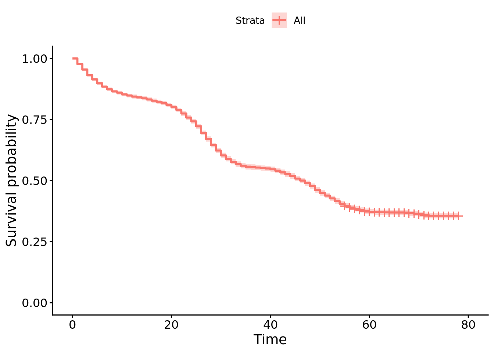
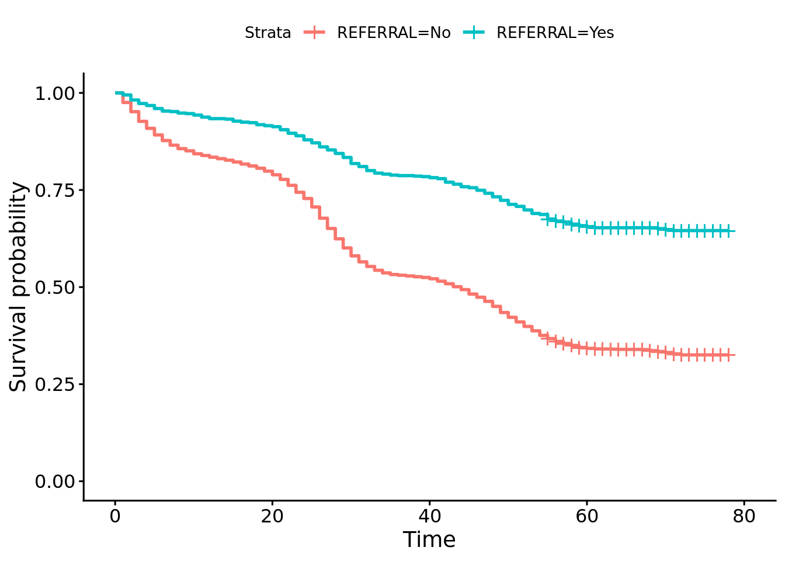
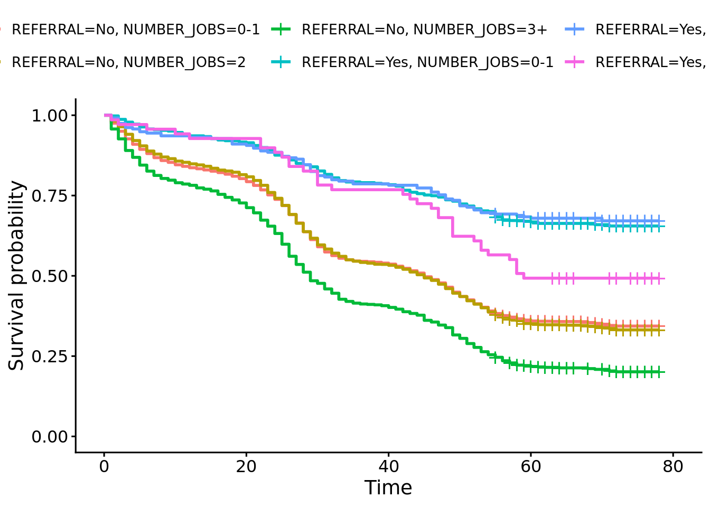
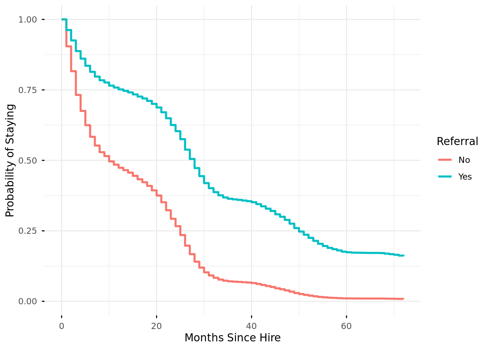

In this document we will conduct survival analysis on a data set relating employee turnover to several variables that were measured at the time an employee was hired.
Exercise 1 - Load, explore, and structure the survival data
library(dplyr)
Attaching package: 'dplyr'
The following objects are masked from 'package:stats':
filter, lag
The following objects are masked from 'package:base':
intersect, setdiff, setequal, union
library(survival)library(survminer)
Loading required package: ggplot2
Loading required package: ggpubr
Attaching package: 'survminer'
The following object is masked from 'package:survival':
myeloma
library(lubridate)
Attaching package: 'lubridate'
The following objects are masked from 'package:base':
date, intersect, setdiff, union
# Load the survival analysis data file from the url providedurl <-"https://rstudio-conf-2022.github.io/people-analytics-rstats/data/survival_analysis_data.csv"surv_data <-read.csv(url)
# view the first few rows in the data set to acquaint yourself with the datahead(surv_data)
EID REFERRAL NUMBER_JOBS PROG_EXER_RATE INTPER_RATE PRIOR_EXP HIRE_REC
1 453921 No 2 Pass 6 Yes 2
2 732470 No 3+ Pass 10 No 2
3 169619 No 3+ Concerns 10 No 1
4 953421 No 0-1 Concerns 6 No 2
5 363973 No 2 Pass 10 Yes 3
6 779914 No 0-1 Pass 7 No 2
HIRE_DATE TURNOVER_DATE TURNOVER
1 2017-02-01 <NA> No
2 2016-02-01 2017-12-01 Yes
3 2016-02-01 <NA> No
4 2017-02-01 2017-07-01 Yes
5 2016-02-01 <NA> No
6 2017-01-01 2021-01-01 Yes
# convert columns ending in 'DATE' to date formatsurv_data <- surv_data |> dplyr::mutate(across(ends_with("DATE"), as.Date))
# Create a censor indicator variable that is 1 if the employee has left and 0 otherwisesurv_data <- surv_data |> dplyr::mutate(CENSOR = dplyr::case_when( TURNOVER =="Yes"~1,TRUE~0 ) )
# Replace missing TURNOVER_DATE values with "2022-07-01" -- think about what missing TURNOVER_DATES meansurv_data <- surv_data |> dplyr::mutate(TURNOVER_DATE = dplyr::case_when(is.na(TURNOVER_DATE) ~as.Date("2022-07-01"),TRUE~ TURNOVER_DATE ) )
# Use the lubridate::interval() function to create the EVENT_TIME variable # Hint: Use %/% months(1) to transform the time difference into months surv_data <- surv_data |> dplyr::mutate(EVENT_TIME = lubridate::interval(HIRE_DATE, TURNOVER_DATE) %/%months(1) )
# Calculate some descriptive statistics for EVENT_TIME using the full sample, then group the data by CENSOR to see how the descriptives# change. mean(surv_data$EVENT_TIME)
Exercise 2 - Create a survival object and estimate survival functions using Kaplan Meier estimates
# Create a survival object using survival::Surv().# Remember it requires two arguments EVENT_TIME and CENSORsurv_object <- survival::Surv(event = surv_data$CENSOR,time = surv_data$EVENT_TIME)
# Use survival::survfit() to estimate survival probabilities using the Kaplan Meier estimator for the entire sample# Save the survfit output into an object called km_all# How many months after hiring would you expect 50% of the sample to remain at the firm? (e.g. the median survival time)# How many months after hiring would you expect 75% of the sample to remain at the firm?km_all <- survival::survfit(surv_object ~1, data = surv_data)summary(km_all)
# Look at the structure of km_all using str()str(km_all)
List of 16
$ n : int 8000
$ time : num [1:78] 1 2 3 4 5 6 7 8 9 10 ...
$ n.risk : num [1:78] 8000 7818 7637 7450 7315 ...
$ n.event : num [1:78] 182 181 187 135 128 110 87 68 41 58 ...
$ n.censor : num [1:78] 0 0 0 0 0 0 0 0 0 0 ...
$ surv : num [1:78] 0.977 0.955 0.931 0.914 0.898 ...
$ std.err : num [1:78] 0.00171 0.00244 0.00304 0.00342 0.00376 ...
$ cumhaz : num [1:78] 0.0227 0.0459 0.0704 0.0885 0.106 ...
$ std.chaz : num [1:78] 0.00169 0.00241 0.003 0.00338 0.00372 ...
$ type : chr "right"
$ logse : logi TRUE
$ conf.int : num 0.95
$ conf.type: chr "log"
$ lower : num [1:78] 0.974 0.95 0.926 0.908 0.892 ...
$ upper : num [1:78] 0.981 0.959 0.937 0.921 0.905 ...
$ call : language survfit(formula = surv_object ~ 1, data = surv_data)
- attr(*, "class")= chr "survfit"
# Using km_all, create a new data frame called km_calc which contains the following variables from km_all:# time, n.risk, n.censor, n.event, and surv km_calc <- tibble::tibble(time = km_all$time,n.risk = km_all$n.risk,n.censor = km_all$n.censor,n.event = km_all$n.event,survival = km_all$surv )
# Using km_calc, determine the following:# How many turnovers occurred in the dataset?sum(km_calc$n.event)
[1] 5090
# How many censored observations are in the dataset?sum(km_calc$n.censor)
[1] 2910
# At what time point do the first censored observations appear? min(which(km_calc$n.censor !=0))
[1] 55
# Subtract n.risk at time point 2 from n.risk at time point 1.km_calc$n.risk[1] - km_calc$n.risk[2]
[1] 182
# Why did n.risk decrease from time point 1 to time point 2?# n.risk at time point 2 = n.risk at time point 1 - n.events at time point 1 - n.censor at time point 1# Subtract n.risk at time point 56 from time point 55.km_calc$n.risk[55] - km_calc$n.risk[56]
[1] 92
# Why did n.risk decrease from time point 55 to time point 56?# n.risk at time point 56 = n.risk at time point 55 - n.events at time point 55 - n.censor at time point 55
# The formula to calculate the survival probabilities using the KM estimator is: # survival(t - 1) * (1 - (n.event[t] / n.risk[t])) # That is, the survival probability at time t is equal to the survival probability at time t-1 multiplied by 1 - (number of events at # time t / number of individuals at risk at time t).# Using the formula above, manual calculate the survival probabilities and save them as variable in km_calc as surv_calc. Take a moment to think about how censored observations are used in the calculation as well.km_calc <- km_calc |> dplyr::mutate(surv_calc_1 = (1- n.event / n.risk),surv_calc =cumprod(surv_calc_1) )
Median: 47 months 75: 24 months
# Use survminer::ggsurvplot() to plot the overall survival function.survminer::ggsurvplot(fit = km_all)
Warning: Using `size` aesthetic for lines was deprecated in ggplot2 3.4.0.
ℹ Please use `linewidth` instead.
ℹ The deprecated feature was likely used in the ggpubr package.
Please report the issue at <https://github.com/kassambara/ggpubr/issues>.

# Use survival::survfit() to estimate survival probabilities by the REFERRAL variable. # For the portion of the sample that was referred for the job (REFERRAL == "Yes"), how many months after hiring would you expect 50% of the sample to remain at the firm? What about for the portion of the sample that was not referred? # Why would the median survival time be missing? km_ref <- survival::survfit(surv_object ~ REFERRAL, data = surv_data)summary(km_ref)
Referral == “Yes” Median is undefined as more than 50% remain after end of study.
Referral == “No” Median: 44 months
# Use survminer::ggsurvplot() to plot the survival function by REFERRAL status. Are the two curves different? survminer::ggsurvplot(km_ref)

# Using the survfit function, estimate the survival probabilities for the interaction between REFERRAL and NUMBER_JOBS variables in # surv_data. Then plot the survival curve using ggsurvplot and provide an interpretation of the curves. Does their appear to be an# interaction?# # HINT: You don't need to create a new variable! km_ref_job <- survival::survfit(surv_object ~ REFERRAL + NUMBER_JOBS, data = surv_data)survminer::ggsurvplot(km_ref_job)

Exercise 3 - Fit a cox proportional hazards model to your data.
# Estimate a cox proportional hazards model. Include all of the main effects and the interactions between INTPER_RATE and PROG_EXER_RATE as well as HIRE_REC and REFERRAL. # HINT: An interaction variable is created by multiplying Variable 1 with Variable 2 (Variable 1 * Variable 2).mod_1 <- survival::coxph( surv_object ~ NUMBER_JOBS + PROG_EXER_RATE + INTPER_RATE + PRIOR_EXP + HIRE_REC*REFERRAL + INTPER_RATE*PROG_EXER_RATE,data = surv_data)
# View the coefficient estimates and standard errors of the modelsummary(mod_1)
# Estimate a cox proportional hazards model that only includes the main effects (no interactions).mod_2 <- survival::coxph( surv_object ~ NUMBER_JOBS + PROG_EXER_RATE + INTPER_RATE + PRIOR_EXP + HIRE_REC + REFERRAL,data = surv_data)
# View the coefficient estimates and standard errors for the main effects model. summary(mod_2)
# Compare the model you fit above to a model that only includes the main effects (no interactions). Use the anova() function to determine if the model with interactions fits your data significantly better than the model with main effects only. If you are unsure of how to use the anova() function, then view the help documentation on it ?anova.coxph or exercise solutions. anova(mod_1, mod_2)
# Based on the model comparison above, decide if you should choose the more complicated interaction model or the less complicated main effects model. Using the model you decided on, test the proportional hazard assumption and determine if any variables violate it. If they do decide if you should drop them from the model.survival::cox.zph(mod_2)
Prior experience is close to violating the assumption and is unrelated to attrition, so we can safely drop it from the model ## Exercise 4 - Interpreting the proportional hazards results.
# Using the final model you decided on during last exercise, provide an interpretation of each of the predictors you kept in the model. summary(mod)
Referral reduces hazard by a factor of .38 (~62%). No difference between 0-1 and 2 jobs prior to hiring. Having 3+ jobs in the year before hire increases hazard by a factor of 1.50 (50%). Compared to a “Concerns” rating on the programming exercise, Pass and Pass+ both reduce hazard by factors of .79 (21%) and .73 (27%), respectively. Every unit increase in interpersonal skills reduces the hazard by a factor of .91 (9%). Every additional increase in hiring rec reduces hazard by a factor of .92 (8%).
# Use the function confint() to calculate the 95% confidence intervals for each coefficient.# Transform the confidence intervals so that they can be interpreted as confidence intervals for exp(coef).confint(mod)
Exercise 5 - Creating predicted survival curves from your proportional hazards model.
# Create a new data frame that contains a column for each of the variables you included in your Cox regression model. Pick of variable you are interested in and provide different values for that variable (the values need to occur in the original data frame) while holding the other variables constant (e.g. NUMBER_JOBS == "0-1" for all rows in the new data frame).new_data <-data.frame(REFERRAL =c("No", "Yes"), NUMBER_JOBS =c("3+", "3+"), PROG_EXER_RATE =c("Concerns", "Concerns"), INTPER_RATE =c(1, 1), PRIOR_EXP =c("No", "No"), HIRE_REC =c(0, 0))
# With your new data frame and your estimated Cox regression model, use the function: survival::survfit() to create predicted survival probabilities from your model and new data frame. # Using summary(), explore these new probabilities. predicted_surv_prob <- survival::survfit(mod, newdata = new_data)summary(predicted_surv_prob)
# With your new data frame and your estimated Cox regression model, use the function: survminer::ggadjustedcurves() to plot your predicted survival functions. If you are familiar with ggplot2, then try to customize the plot output. survminer::ggadjustedcurves(mod, data = new_data, variable ="REFERRAL", ylab ="Probability of Staying",xlab ="Months Since Hire",ggtheme = ggplot2::theme_minimal()) + ggplot2::labs(color ="Referral")

Using the results of your final Cox regression model and your predicted survival functions to write a high-level business summary of what predictor or predictors you believe to be the most important to focus on to reduce attrition.